Veri hattı, görüntüleyici mimarisi, gölgelendiriciler, mühendislik modülleri (ısı haritası, canlı kesit, ölçüm, köşeden pencereye), performans bütçesi, testler ve yeniden üretim adımları.
Supremo 85 (8500 serisi) uPVC pencere sisteminin iki etkileşimli 3B numunesini tarayıcıda gösteren, internet gerektirmeyen ve fuar ekranında gözetimsiz çalışabilen bir site. Bu belge sitenin nasıl üretildiğini, nasıl çalıştığını, nasıl test edildiğini ve nasıl yeniden üretileceğini anlatır.
| Sayfa | İçerik | Parça | Üçgen | Çizim çağrısı |
|---|---|---|---|---|
Köşe kesitiindex.html (açılış) | 45° kaynaklı köşe numunesi, 2 × 300 mm kol. Keşif turu, 360° döner tabla, dört eksende kesit, su tahliyesi, teknik çizim bindirme, renk/folyo ve karşılaştırma perdesi, üretim hikâyesi, röntgen merceği, kamara sayacı, ısı haritası, canlı 2B kesit, ölçüm, köşeden pencereye yapılandırıcı, kiosk modu. | 26 | 84.880 | 27 |
Düz kesitkesit.html | 300 mm düz numune (önceki sürüm). Köşe çalışmaları sırasında yalnızca sayfa geçişi, kiosk dönüşü ve adres parametrelerinin taşınması eklendi. | 22 | 74.738 | 23 |
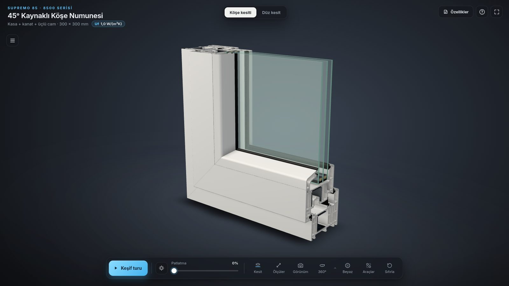
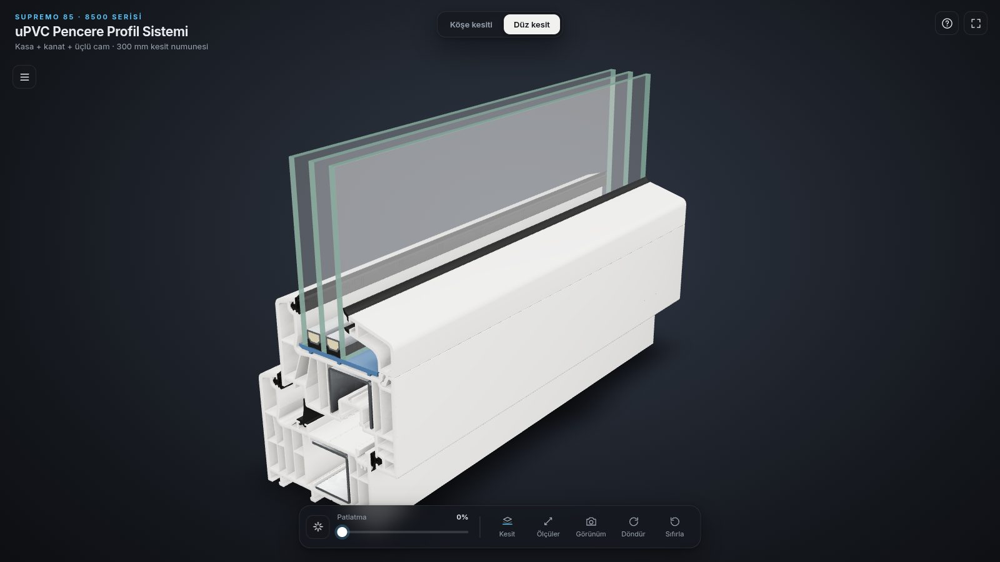
Aşağıdaki kurallar projenin başından beri sabittir; her yeni özellik bunlara göre tasarlandı ve testlerle denetlenir.
| Kural | Uygulama |
|---|---|
| Çevrimdışı | three.js dahil her dosya yereldir. Test, sayfanın hiçbir harici adrese istek atmadığını denetler. |
| Sunucusuz açılış | index.html'e çift tıklamak (file://) yeterlidir. Tarayıcı yerel dosya okumayı engellediği için ikili varlıklar assets/kose/assets-embedded.js içine data: URL olarak gömülür (bkz. 3.6). |
| Performans bütçesi | Her durumda < 150.000 üçgen ve < 50 çizim çağrısı; dokular en çok 2048 piksel ve KTX2; ağır son işlem (post-processing) ve gerçek zamanlı gölge yok. |
| Ölçü uydurmama | Arayüzdeki her ölçünün kaynağı döküman sayfasıdır (s.9 gibi). Döküman vermeyen değerler "varsayım" ya da "gösterim amaçlı" diye etiketlenir ve Teknik özellikler kartında listelenir. |
| Arayüz | Yalnızca Türkçe. Marka tarafsızdır: ürün adı görünür, üretici adı görünmez. |
| Gözetimsiz çalışma | Kiosk modu: boşta tanıtım döngüsü, dokunmatik hedefler, kendini toparlama (bkz. 4.9). |
| Katman | Araç | Kullanım |
|---|---|---|
| Kaynak veri | PyMuPDF, Shapely, NumPy, SciPy | PDF vektörlerinden kesit poligonları; ısı hesabı (spsolve), uç nokta eşleme (cKDTree). |
| 3B modelleme | Blender 5.0 (bpy 5.0.1, arayüzsüz), bmesh, Cycles | Numuneler, montaj denetimi, AO pişirme, stüdyo HDRI, önizleme renderları. |
| Varlık sıkıştırma | gltf-transform (meshopt), KTX-Software 4.3 | Geometri nicemleme ve sıkıştırma; Basis (ETC1S), RGBA16F ve R16F + zstd dokular. |
| Görüntüleyici | three.js r186 (özel alt küme), three-mesh-bvh, esbuild | WebGL 2 PBR görüntü, BVH ışın izleme ve düzlem kesişimi, tek dosyalık IIFE paket. |
| Test | playwright-core 1.63 + Chromium, Xvfb, Node | Yazılımsal GL üzerinde uçtan uca tarayıcı testleri; tarayıcısız hesap testleri. |
| Dağıtım | Python / Node / PowerShell / Perl statik sunucular | Çift tıklanan başlatıcılar (.bat, .command) ve kiosk başlatıcıları. |
output/
├─ site/ dağıtılan site (teslim ZIP'inin içeriği)
│ ├─ index.html · css/kose.css · js/kose.js köşe kesiti
│ ├─ kesit.html · css/style.css · js/app.js düz kesit (style.css ortak yazı tipi ve bileşenler)
│ ├─ assets/ · assets/kose/ GLB, KTX2 dokular ve file:// için gömülü kopyalar
│ ├─ vendor/basis/ KTX2 (Basis) dönüştürücü
│ └─ başlat.* · kiosk-başlat.* · sunucu.* başlatıcılar ve yerel sunucular
├─ source/ üretim hattı (sunulmaz, yeniden üretim için)
│ ├─ scripts/ Python (bpy dahil) ve Node betikleri, testler
│ ├─ viewer/ düz kesit görüntüleyici kaynakları
│ ├─ viewer-kose/ köşe görüntüleyici kaynakları: js/, vendor/, build.sh, embed_assets.py
│ ├─ section_mm.json · kose_info.json · water_path.json · thermal_check.json
│ ├─ bake/ · env/ · tex/ ara çıktılar (AO, HDRI, desenler, ısı önizlemesi)
│ └─ reference/ bindirme görselleri (döküman ve sertifika PDF'leri depoda tutulmaz)
└─ docs/ bu belge: dokuman.html, img/, shots.mjs, budget.mjs, build_pdf.mjs, pdf_post.pyGörüntüleyicideki geometri ve teknik bilgi iki belgeden gelir: 32 sayfalık teknik üretim dökümanı ve ift Rosenheim test belgesi. İki belge de yalnızca yerelde tutulur (source/reference/, .gitignore).
| Sayfa | İçerik | Projede kullanıldığı yer |
|---|---|---|
| s.4 | Aksesuarlar | Drenaj kapağı (rüzgarlık) parçası. |
| s.5 | Kesim ölçüleri tablosu (kasadan kasaya: kasa +6, kanat −74, kanat içi cam −202 …) | Yapılandırıcının kesim listesi; üretim hikâyesinin kesim adımı. |
| s.6 | Profil kesimi (45°) | Köşe gönyesi; hikâye adım 1. |
| s.7 | Çıta kesimi | Cam çıtası birleşimi. |
| s.8 | Su tahliyesi: yarık düzeni 10 · 32 · 70 · 32 mm, 32 × Ø4 mm, adet tablosu (C'ye göre 1–4), eğik yarık | Drenaj yarıkları, su animasyonu, yapılandırıcının kanal adedi. |
| s.9 | Kesit çizimi (vektör) ve su okları | Tüm kesit geometrisi, kamara sayısı (14/11), su yolu, çizim bindirme, ısı hesabı. |
| s.10 | Kasa hazırlığı: takviye A − 153, 3,9 × 19 YSB vida, uçtan 150 mm, ara 300–400 mm | Kasa takviyesi ve vidaları; yapılandırıcı. |
| s.11 | Kanat aksesuarları: takviye A − 160, 3,9 × 19 YHB vida, kol mili kanat kenarından 33 mm, kanat drenaj adedi (1–3) | Kanat takviyesi ve vidaları; kol konumu; yapılandırıcı. |
| s.14 | Kaynak kuralları: 240–280 °C, destek plakaları | Hikâyenin kaynak adımı; kaynak bilgi işareti. |
| s.17 | Menteşe adedi (A < 1100: 2 · 1101–1400: 3 · > 1400: 4), yerleşim 165 / 350 / eşit, kol A/2 | Yapılandırıcı (içe açılır). |
| s.24 | Çift açılım donanımı: GRM ispanyolet ve OR makas aralıkları ve kodları | Yapılandırıcı (çift açılım). |
| s.32 | Vida tablosu (3,9 × 22 YSB, 3,9 × 25 YHB) | "Döküman içi fark" notu (s.10/s.11 ile farklı boylar). |
Belge 25-002770-PR01 (NW-K20-06-en-01), 28.11.2025: profil ısı geçirgenliği Uf = 1,0 W/(m²K), EN 12412-2:2003-07. Test camın yerine yalıtım paneliyle yapılmıştır. Belgedeki profil kodları: kasa BF 8581 (74 × 85 mm), kanat BF 8582 (84 × 85 mm), takviye BF 409-15 (30 × 27 mm). Bu değerler parts-data.js → PERFORMANCE içindedir ve Teknik özellikler kartında, başlıktaki rozette ve ısı haritası açıklamasında kaynağıyla gösterilir.
s.9'daki kesit çizimi vektördür; geometri ölçülmez, doğrudan çizim komutlarından okunur.
extract.py): PyMuPDF ile sayfanın çizim komutları; her komut renk ve çizim sırasıyla birlikte bir parça dizisine dönüşür. Ölçek 1 / 3,0082 mm/pt, dökümandaki ölçü çizgilerinden kalibre edilir ve 85 · 104,5 · 124 · 74 · 84 · 40 · 32 mm ölçüleriyle doğrulanır.extract2.py, build2d.py): siyah çizgiler; uç noktalar 0,06 mm içinde birleştirilir (cKDTree), bağlı bileşenlere ayrılır, vida çizimleri dışlanır, polygonize ile kapalı poligonlar (delikli) kurulur.extract3.py): contalar, takviyeler, çıta dudakları, takoz köprüsü, ara çıtalar ve sızdırmazlık, renk ve çizim sırası gruplarından.final2d.py): köşe yuvarlatma (profiller 0,2 mm, contalar 0,08–0,1 mm), 0,003 mm sadeleştirme, yön düzeltme (dış halka saat yönü tersine, delikler saat yönünde); camlar çizimdeki çizgilerden tam dikdörtgen.Çıktı section_mm.json: 21 poligon (kasa 14 delikli, kanat 11 delikli, çıta, iki takviye, dört conta, iki çıta dudağı, takoz köprüsü, iki ara çıta ve nem alıcıları, iki sızdırmazlık, üç cam). Koordinat sistemi: sx derinlik (0 = kasa dış yüzü, oda tarafına doğru artar), sy yükseklik (0 = kasa dış kenarı). Köşe modelinde Z = sx − 52,25 mm, alt kolda Y = sy, yan kolda X = sy.
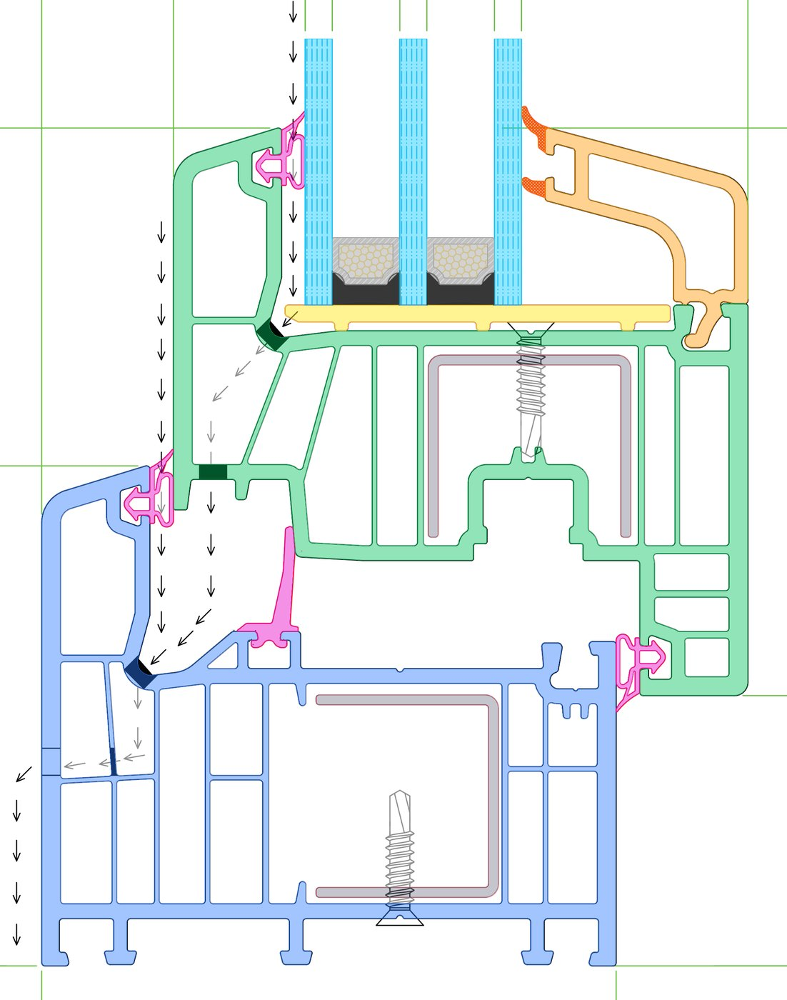
section_mm.json poligonları (renkli) s.9 çizim çizgileri üzerinde.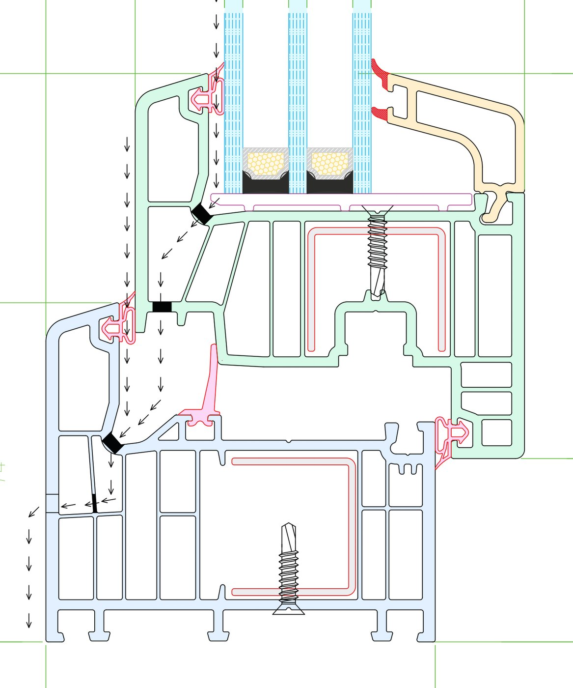
Kaynak verilerden sitenin dosyalarına giden yol tamamen betiklerle tekrarlanabilir. Blender arayüzü kullanılmaz; bpy Python modülü olarak çalışır.
Şekil 3.1 · Veri hattı. Düz çizgiler dosya akışını, kesikli çizgi yardımcı veriyi gösterir.
build_model.py düz numuneyi (22 obje), build_corner.py köşe numunesini (26 obje) kurar. Her iki betik de kesit poligonlarını section_mm.json'dan okur; ölçüler betiğin içinde sayfa referanslıdır.
miter_L(), her kesit halkasının her noktası için üç köşe noktası üretir: gönye düzleminde ortak nokta M (X = Y = sy), alt kolun serbest ucunda S (X = 300) ve yan kolun serbest ucunda J (Y = 300). M–S ve M–J yüzleri tek bir kapalı katı oluşturur; kaynaklı profil gerçekteki gibi tek parçadır, gönyede çakışan ya da açık yüz kalmaz. Serbest uçlar kapaklanır.supremo85_kose.blend ve kose_info.json (yarık merkezleri D-E 100, C 202, B 128, A 230 mm; vidalar 150 / 222 mm; takviye başlangıçları).check_assembly.py iki düzeyde denetler: 2B'de kesit poligonları arasındaki temas çiftleri (aralık ≤ 0,05 mm) ve gömülme derinliği; 3B'de Blender BVH ağaçlarıyla üçgen kesişimi ve en yakın mesafe. assembly_report.py sonuçları montaj_denetimi_kose.md'ye yazar.
| Bulgu | Değer | Yorum |
|---|---|---|
| En büyük gömülme | 0,051 mm | Kanat iç contasının tırnak ayağı yuvasına sıkı geçer; çizim çizgi kalınlığının (0,17 mm) altında. |
| Diğer temaslar | ≤ 0,005 mm | Sayısal gürültü düzeyi. |
| Vidalar | 0,0005–0,0116 mm | Delikler vida zarfıyla açıldığından PVC ve çelikle kesişim yok. |
| Takviyeler | 0,5 mm | Kamaralarına montaj boşluğuyla oturur; boşluk çizimde de vardır. |
| Gönye | — | Köşedeki temas çiftleri düz numunedekilerle aynı; gönyeden yeni çakışma yok. |
bake_ao.py (CORNER=1) tek bir UV atlası açar: gönyede UV dikişi açılır, uzun kollar kendi eksenlerinde ×0,25 sıkıştırılır. Cycles iki AO pişirir ve tek dokuya paketler:
uAoMix).uv1.x): folyo maskesi; dış kontur yan yüzleri 1, uç kesit ve kamara duvarları 0 (beyaz PVC çekirdek).Sıkıştırılmamış GLB gltf-transform meshopt ile 16 bit konum, 12 bit normal ve 14 bit UV nicemlemesiyle sıkıştırılır: supremo85_kose.glb {{KB:site/assets/kose/supremo85_kose.glb}}.
| Dosya | Biçim | Boyut | Görev |
|---|---|---|---|
kose/ao_kose.ktx2 | 2048², Basis ETC1S | {{KB:site/assets/kose/ao_kose.ktx2}} | AO atlası (R montaj, A parça) |
kose/studio2.ktx2 | 1024 × 512 RGBA16F | {{KB:site/assets/kose/studio2.ktx2}} | Stüdyo HDRI v2: Blender'da modellenmiş stüdyonun Cycles panoraması (render_studio_hdri.py); PMREM ortam haritası |
kose/ahsap.ktx2 | 2048 × 512 | {{KB:site/assets/kose/ahsap.ktx2}} | Döşenebilir prosedürel ahşap folyo deseni (make_wood_decor.py) |
spangle.ktx2 | 1024² | {{KB:site/assets/spangle.ktx2}} | Galvaniz çiçeklenme deseni (make_spangle.py); iki sayfada ortak |
kose/isi.ktx2 | 535 × 705 R16F + zstd | {{KB:site/assets/kose/isi.ktx2}} | Isı haritası, T / 20 °C (bkz. 6.1) |
| Betik | Çıktı | Kullanım |
|---|---|---|
extract_drawing_lines.py | drawing-data.js | s.9 çizim çizgileri; uç kesitte 1:1 teknik çizim bindirme. |
extract_water_path.py | water-path.js, water_path.json | s.9'daki 42 su okundan 3B tahliye yolu; kesit poligonlarına göre denetlenir. |
extract_rings.py | rings-data.js, chambers-data.js | 0,05 mm sadeleştirilmiş dış konturlar (kaynak taşıntısı, tam pencere süpürmesi); kasa 14 ve kanat 11 kamara. |
thermal_section.py | isi.ktx2, thermal-data.js, thermal_check.json | Isı haritası dokusu, doku kutusu, doğrulama raporu. |
build-vendor.sh: vendor-entry.js'de listelenen three.js r186 alt kümesini ve eklentileri (OrbitControls, GLTFLoader, KTX2Loader, MeshoptDecoder, three-mesh-bvh) vendor/three-bundle.min.js'e paketler. Yeni bir three.js sınıfı kullanılacaksa önce buraya eklenir.build.sh: js/main.js → site/js/kose.js (esbuild, IIFE, es2019, küçültülmüş; import.meta.url → document.baseURI). Ardından embed_assets.py GLB'yi, KTX2 dokuları ve Basis dönüştürücüsünü base64 data: URL olarak assets/kose/assets-embedded.js'e yazar ({{KB:site/assets/kose/assets-embedded.js}}).setupFileProtocol() bu klasik betiği yükler ve LoadingManager.setURLModifier tüm varlık isteklerini gömülü data: URL'lere yönlendirir; http'de normal dosyalar yüklenir. İki yol da testte ayrı ayrı çalıştırılır.Köşe görüntüleyicisi source/viewer-kose/js/ altındaki ES modüllerinden oluşur. main.js çekirdektir (durum, render döngüsü, kamera, kesit, seçim, arayüz); özellikler ayrı modüllerdedir ve çekirdeğe küçük bir app arayüzüyle bağlanır.
Şekil 4.1 · Modül haritası. Her modül kurucusunda app.onFrame() ile render döngüsüne bağlanır.
NeutralToneMapping, sRGB çıkış, yerel kırpma açık. Kenar yumuşatma ?aa=0 ile kapanır; piksel oranı üst sınırı 2 (kiosk 1,5, ?dpr). Yazılımsal GL (llvmpipe, SwiftShader) algılanırsa düşük kalite kademesi.EXPECTED).unpackAlignment = 1, doğrusal süzme).createMaterial(), nicemleme açılımı (uODeq) ve BVH (computeBoundsTree).compileAsync ile derlenir; ilk kullanımda takılma olmaz.&attract=1) doğrudan tanıtım döngüsü.Uygulama durumu tek bir state nesnesindedir: seçim ve üzerine gelme, izolasyon ve hayalet kümeleri, patlatma (değer, hedef, animasyon), kesit (on, axis, pos, flip), ölçü/çizim/işaret anahtarları, renk ve karşılaştırma perdesi, kamera animasyonu, açılış ve pencere kipi.
requestAnimationFrame döngüsü her karede şu sırayla çalışır: üzerine gelme → görünüm kaydırma → kamera animasyonu → modüllerin step() kancaları → patlatma → AO karışımı ve vurgu geçişleri → 360° döner tabla. Herhangi bir adım "etkin" dönerse ya da needsRender > 0 ise kare çizilir; aksi halde çizim atlanır ve GPU boşta kalır. Modüller bir şey değiştirdiğinde app.requestRender() çağırır.
Uyarlanabilir kalite: açılıştan 10 sn sonra, 60 karelik ortalama 45 FPS'nin altındaysa önce piksel oranı 0,25 adımla düşer, sonra mikro yüzey ayrıntısı kapanır. Kiosk tanıtımına her girişte kalite yeniden denenir (restoreQuality).
Serbest alan: açık paneller (parça listesi, bilgi paneli, yapılandırıcı, canlı kesit, ısı açıklaması, tur kartı) engel sayılır; kamera modeli kalan alana ortalar (setViewOffset). Panel ölçümleri ResizeObserver ve MutationObserver ile önbelleğe alınır.
| Dosya | Görev | Ek çağrı | Satır |
|---|---|---|---|
main.js | Çekirdek: yükleme, model, kamera, kesit, seçim, patlatma, arayüz, klavye, performans, render döngüsü | — | {{LINES:source/viewer-kose/js/main.js}} |
materials.js | PBR malzemeleri ve gölgelendirici yamaları (bölüm 5) | — | {{LINES:source/viewer-kose/js/materials.js}} |
tour.js | Veri güdümlü keşif turu; kiosk tanıtım döngüsü | — | {{LINES:source/viewer-kose/js/tour.js}} |
story.js | Üretim hikâyesi: 6 adım, 46 sn; kollar geçici mesh'lere bölünür, ısıtıcı plaka, kaynak taşıntısı | yalnız oynarken | {{LINES:source/viewer-kose/js/story.js}} |
lens.js | Röntgen merceği (SUP_LENS) | 0 | {{LINES:source/viewer-kose/js/lens.js}} |
chambers.js | Kamara dolgusu: sayaç (14/11) ve ısı haritası dolgusu | +1 | {{LINES:source/viewer-kose/js/chambers.js}} |
thermal.js | Isı haritası geçişi ve açıklama paneli | 0 | {{LINES:source/viewer-kose/js/thermal.js}} |
section-inset.js | Canlı 2B kesit (canvas) ve paylaşılan makeCutter() | 0 | {{LINES:source/viewer-kose/js/section-inset.js}} |
measure.js | Ölçüm aracı | +1 | {{LINES:source/viewer-kose/js/measure.js}} |
configurator.js | Köşeden pencereye: kart, kip geçişleri, büyüme, 3B etiketler | — | {{LINES:source/viewer-kose/js/configurator.js}} |
window.js | Tam pencere geometrisi (süpürme), cam, menteşe, kol, işaretler | +7 | {{LINES:source/viewer-kose/js/window.js}} |
configurator-data.js | Döküman kuralları, saf işlevler (Node ile test edilir) | — | {{LINES:source/viewer-kose/js/configurator-data.js}} |
water.js | Su tahliyesi: damlalar (InstancedMesh) ve akış şeridi | +2 | {{LINES:source/viewer-kose/js/water.js}} |
drawing.js | s.9 çizim bindirmesi (LineSegments) | +1 | {{LINES:source/viewer-kose/js/drawing.js}} |
hotspots.js | Numaralı bilgi işaretleri (BVH görünürlük testi), patlatma etiketleri | 0 | {{LINES:source/viewer-kose/js/hotspots.js}} |
kiosk.js | Kiosk modu | 0 | {{LINES:source/viewer-kose/js/kiosk.js}} |
contact-shadow.js | Temas gölgesi ve ışık havuzu; yalnız model hareket edince yeniden hesaplanır | 1 | {{LINES:source/viewer-kose/js/contact-shadow.js}} |
parts-data.js | 26 parça, gruplar, malzemeler, patlatma vektörleri, kesit hazırları, renkler, teknik özellikler, varsayımlar, PERFORMANCE | — | {{LINES:source/viewer-kose/js/parts-data.js}} |
tour-data.js | 12 tur bölümü | — | {{LINES:source/viewer-kose/js/tour-data.js}} |
"Ek çağrı": özellik açıkken eklenen çizim çağrısı. Satır sayıları bu belgenin derlendiği sürümdendir.
Tek bir THREE.Plane kullanılır. Eksenler: x ve y (kolun serbest ucu tarafı atılır), z (oda tarafı atılır, boyuna kesit) ve d (gönye; düzlem konumu (x − y)/√2). Düzlem malzemelere yalnızca kesit açıkken bağlanır; kapalıyken clippingPlanes = null olur ve erken derinlik testi korunur. Kesilen katının içi, arka yüzlerin kapak rengiyle boyanmasıyla dolu görünür (5.4). Kesit panelinde altı hazır kesit vardır: gönye, vida ekseni (X 150), D-E (X 100), C (X 202) ve A (X 230) yarıkları, yan kol.
Raycaster + acceleratedRaycast (BVH). Kesitin atılan tarafındaki isabetler elenir, mercek içindeki PVC isabetleri atlanır, saydam camın 12 cm arkasındaki katı parça önceliklidir. Üretim hikâyesi ve pencere kipinde seçim kapalıdır.explode listesi { t: [başlangıç, bitiş], v: [x, y, z] mm } adımlarından oluşur; oran 0–1 kaydırıcıyla ya da animasyonla değişir. Görünür küre otomatik çerçevelenir; AO parça-içi kanala geçer.Tur tamamen veridir (tour-data.js); her bölüm aşağıdaki anahtarlarla tanımlanır ve tour.goTo() önce önceki bölümün etkilerini temizler (cleanup()).
| Anahtar | Etki |
|---|---|
view, turn | Kamera pozu (görünüm adı ya da { dir, r, target, fov }), 360° dönüş |
clip, explode, dims | Kesit düzlemi, patlatma oranı, döküman ölçüleri |
ghost, solo | Hayalet (x-ray) parçalar, izolasyon |
water, hotspots, callouts | Su animasyonu, bilgi işaretleri, patlatma etiketleri |
finishes | Bölüm süresince sırayla gösterilen renkler |
story, lens, chambers, thermal, window | Üretim hikâyesi, röntgen merceği, kamara sayacı, ısı haritası, köşeden pencereye |
dur | Bölüm süresi (ms) |
Bölümler: genel (10 sn), kaynak (12), kamara (12), ısı (14), çelik/röntgen (13), conta (12), su (18), cam (12), üretim hikâyesi (46,5), renk (16), köşeden pencereye (14), final (9); toplam yaklaşık 3 dk 9 sn. tour.start({ only }) tek bölüm oynatır (Araçlar'dan üretim hikâyesi); { loop, attract } kiosk tanıtımıdır.
| Davranış | Ayrıntı |
|---|---|
| Boşta → tanıtım | &idle sn (varsayılan 90) dokunulmazsa resetAll(), kalite yenileme, beyaz renk ve döngülü tur; "Dokunun ve keşfedin" çağrısı. İlk dokunuş tanıtımı bitirir ve seçim sayılmaz (swallowTap, en fazla 1,5 sn). |
| Dokunmatik | Büyük hedefler; sağ tık, metin seçimi ve sayfa yakınlaştırma kapalı; imleç 3 sn sonra gizlenir. |
| Dayanıklılık | İlk dokunuşta tam ekran (&fs=0 ile kapatılır); &reload saatte bir tanıtımdayken yenileme; grafik bağlamı kaybı ya da yükleme hatasında (20 sn sonra) &attract=1 ile yeniden yükleme ve doğrudan tanıtım. |
| OLED koruması | Tanıtımda marka soluklaşır; sabit öğeler 240 sn'lik yavaş bir kayma animasyonuyla (translate) yer değiştirir. |
| Sayfa geçişi | Kiosk parametreleri (kiosk, idle, reload, fs, q, dpr, aa) iki sayfa arasında taşınır; düz kesit boşta kalınca köşe sayfasına döner. |
| Operatör | Sağ üst köşeye 3 sn içinde 5 dokunuş performans panelini açar; çıkış Alt+F4 / ⌘Q. |
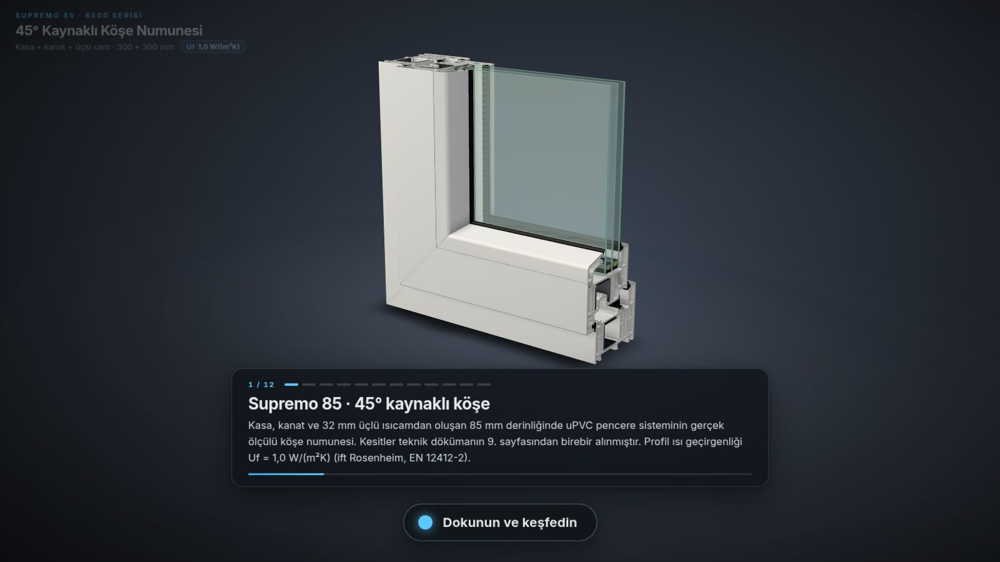
Görüntüleyici kendi gölgelendiricisini sıfırdan yazmaz. three.js'in standart PBR malzemeleri (MeshPhysicalMaterial, MeshStandardMaterial) onBeforeCompile ile yamalanır. Böylece ışık, ortam haritası, ton eşleme ve kırpma three.js'ten gelir; proje yalnız kendi katmanlarını ekler. Yamalar materials.js → patch() içindedir.
| three.js parçası | Eklenen |
|---|---|
common (tepe, parça) | Varyingler (vWPos, vWNrm, vOPos, vONrm, vFoil, vAxis), uniformlar, gürültü işlevleri, capHatch(), THERMAL_GLSL |
fog_vertex | Dünya ve nesne konumu/normali; folyo maskesi; pencere ekseni |
clipping_planes_fragment | Öncesinde: mercek (SUP_LENS) ve tam pencere (SUP_WIN) discard |
aomap_fragment | İki kanallı AO (mix(R, A, uAoMix)); kesit düzlemine yakın yüzeylerde AO gevşetme |
color_fragment | Renk seti seçimi, folyo ve ahşap, kalıp izi, kaynak dikişi, galvaniz deseni |
roughnessmap_fragment, normal_fragment_maps | Folyo pürüzlülüğü, gren; kalıp izi normali, folyo kabartması (türevden) |
lights_physical_fragment | Folyoda vernik (clearcoat) çarpanı |
emissivemap_fragment | Üretim hikâyesinde gönye yüzü ısınması (uHeat) |
dithering_fragment | Isı haritası, kesit kapağı, vurgu (fresnel), numune sınırı çizgisi |
Her malzemenin program önbellek anahtarı 'kose-' + malzeme + define'lar'dır; aynı yama farklı define'larla ayrı programlara derlenir.
| Paylaşılan uniform | Anlam |
|---|---|
uClip, uClipOn | Kesit düzlemi (normal, sabit) ve durumu |
uAoMix, uAoStrength | Montaj ↔ parça AO karışımı, AO şiddeti |
uMicro, uSeam | Mikro yüzey ayrıntısı (düşük kademede 0), kaynak dikişi görünürlüğü |
uFin[4], uFinA[4], uFinB[4] | Dört renk seti: [perde solu dış, sol iç, sağ dış, sağ iç]; mod, pürüzlülük, vernik, kabartma ve iki renk |
uSplit, uLens | Renk perdesi (cihaz pikseli), mercek (merkez, yarıçap, açık) |
uHeat, uCapTint | Üretim hikâyesi: gönye ısınması, kesit yüzü renk katmanı |
uThermal, uTemp, uTempBox | Isı haritası geçişi, sıcaklık dokusu, doku kutusu |
uWinGrow, uWood | Pencere büyüme yarıçapı (m), ahşap desen dokusu |
Malzeme başına: uHi, uHiColor (vurgu), uCapColor, uCapHatch, uHatch (kapak rengi ve tarama), uSeamK, uODeq (5.3), uThK (ısı haritasında boyanır mı; ısıcam bileşenleri hesapta olmadığı için 0).
| Define | Malzeme | Etki |
|---|---|---|
SUP_FOIL | Kasa, kanat, çıta | Folyo maskesi (uv1), renk setleri, ahşap deseni |
SUP_SEAM | Kaynaklı profiller, çıta | Gönye düzleminde ekranda en az 1 piksel dikiş; ısınma parıltısı |
SUP_DIE | PVC | Ekstrüzyon kalıp izleri (kol ekseni boyunca, yakın planda) |
SUP_GRAIN | EPDM, TPE, nem alıcı | 0,38 mm mat gren |
SUP_TRI | Çelik | Üçlü düzlem galvaniz deseni |
SUP_LENS | PVC ve kapak | Mercek içinde discard; yalnız mercek açıkken eklenir (erken derinlik testi için) |
SUP_WIN | Pencere malzemeleri | Numune bölgesini atma, sınır çizgisi, büyüme, süpürme ekseni |
uODeqGLB KHR_mesh_quantization kullanır: köşe noktaları 16 bit tam sayıdır, düğümün ölçeği ve ötelemesi onları metreye açar. Gölgelendiricideki milimetre ölçekli desenler (kalıp izi, ahşap damarı, gren, kaynak dikişi, ısı haritası) nesne uzayında çalıştığından vOPos = transformed · uODeq.w + uODeq.xyz ile numunenin durağan metre koordinatı kullanılır. uODeq her parça için yüklemede düğümden okunur; eşit olmayan ölçek uyarı verir. (Bu açılım yokken ahşap deseni lekeli görünüyordu.)
Bir katı kırpıldığında içi boş görünür; kamera kesilen yüzeyin içindeki arka yüzleri görür. Proje bu arka yüzleri (!gl_FrontFacing) ton eşlemeden geçmeyen düz bir kapak rengiyle boyar ve üstüne tarama çizer: capHatch() çizgi aralığını ekrandaki piksel boyutuna göre 2'nin katları halinde seçer, böylece yakınlaştırırken kaymadan sıklaşır. Ek geometri gerekmez ve çizim çağrısı eklenmez. Çelik, EPDM, cam ara çıtası gibi malzemelerin kapak renk ve tarama yönleri ayrıdır (CAP tablosu).
Isı haritasında kapağın kesit koordinatı gerekir; arka yüzün kendi konumu kesit düzleminde değildir. Bu yüzden bakış ışınının düzlemi deldiği nokta hesaplanır:
vec3 rd = vWPos - cameraPosition; // bakış ışını (dünya)
float tt = -(dot(uClip.xyz, cameraPosition) + uClip.w) / dot(uClip.xyz, rd);
vec3 po = gl_FrontFacing ? vOPos : vOPos + rd * (tt - 1.0); // numune yalnız ötelendiği için dünya farkı = nesne farkı
vec2 sxy = vec2(po.z * 1000.0 + 52.25, (po.x >= po.y ? po.y : po.x) * 1000.0); // alt kol Y, yan kol Xgl_FragCoord.x > uSplit.x ile ayrılır; ikinci geçiş gerekmez.dFdx/dFdy) hesaplanır ve doku pikseli ekranda ~2 pikselden küçülünce söner.FINISHES): beyaz, antrasit gri, siyah, altın meşe, ceviz; iki renkli dış antrasit / iç beyaz ve dış altın meşe / iç beyaz. Renkler görsel amaçlıdır.forceSinglePass (saydam + çift yüz tek geçişte). Isı haritasında sönükleşir.ShaderMaterial, tek geçiş; turdaki conta ve su bölümlerinde bağlam parçaları için.ShaderMaterial; sıra özniteliği (aOrd) ile sayaç animasyonu, uMode = 1'de sıcaklık rengi.İç 20 °C / dış 0 °C koşulunda kesitteki sıcaklık dağılımı. Hesap scripts/thermal_section.py ile önceden yapılır; görüntüleyici sonucu doku olarak okur. Açıklamada yalnızca resmi değer (Uf = 1,0, ift) yazılır; hesabın kendi Uf değeri gösterilmez.
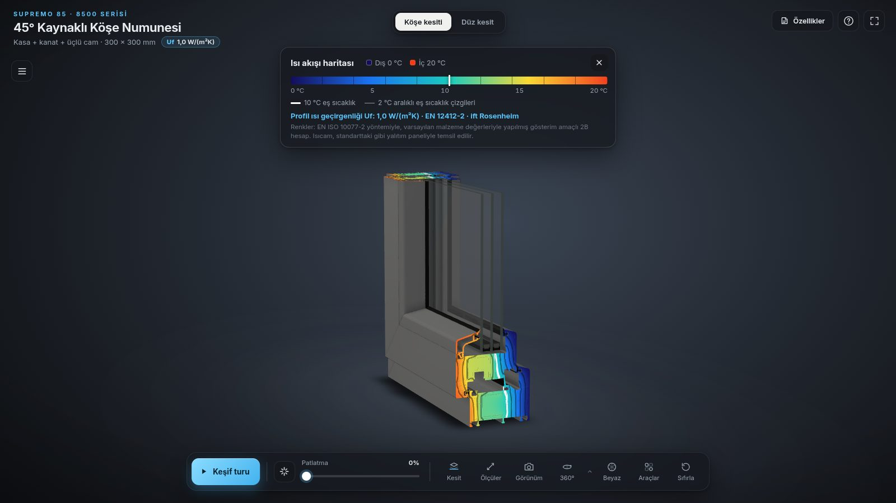
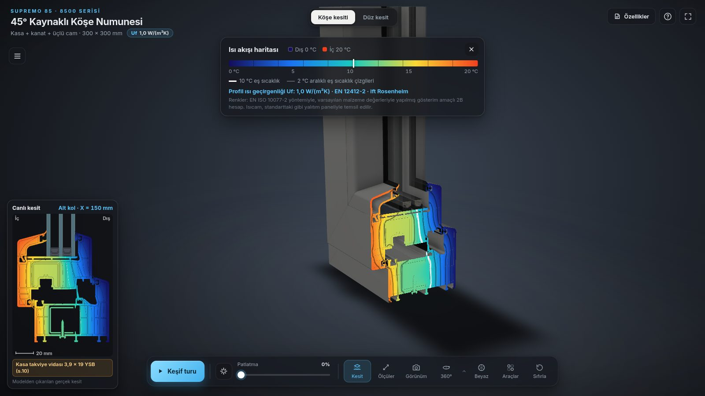
scipy.sparse.linalg.spsolve.λ_eq = b (h_a + h_r); h_a = C1/b (b < 5 mm) ya da max(C1/b, C2·ΔT^(1/3)), C1 = 0,025, C2 = 0,73, ΔT = 10 K; h_r = 4σT_m³·E·F, E = 1/(2/ε − 1), ε = 0,9, F = ½(1 + √(1 + d²/b²) − d/b), T_m = 283 K. b ısı akışı yönündeki, d dik boyuttur.thermal_check.json)| Denetim | Sonuç |
|---|---|
| Enerji dengesi | İç ve dış akı 2,8467 W/m; fark ~2·10⁻⁸ % |
| Izgara yakınsaması | 0,1 → 0,2 mm ızgarada akı farkı %0,15 |
| Uf iç denetimi | Panel görünür kenardan 190 mm, 0,25 mm ızgara: hesaplanan Uf ≈ 1,03 W/(m²K); resmi değer 1,0. Arayüzde gösterilmez. |
uTempBox = (x0, y0 + H, W, −H).THERMAL_GLSL: beş duraklı renk rampası; fwidth ile ekranda sabit kalınlıkta eş sıcaklık çizgileri (2 °C ince, 10 °C kalın). Kesit kapakları, kolların serbest uç yüzleri ve kamara dolgusu boyanır; diğer yüzeyler sönükleşir. Gönye kesitinde kamara dolgusunun üçüncü takımı x − y = sabit düzlemine yerleşir.Kesit açıkken sol altta düzlemdeki gerçek kesit çizilir. Algoritma section-inset.js → makeCutter() içindedir ve ölçüm aracı da aynı işlevi kullanır.
matrixWorld tersi).shapecast: yalnız düzlemi kesen BVH düğümleri gezilir; düzlemin iki yanına düşen üçgenlerden kesişim parçası çıkar.// ortak kenar, iki üçgende de aynı sırayla hesaplanır: uç noktalar bit düzeyinde aynı çıkar
if (Q.x < P.x || (Q.x === P.x && (Q.y < P.y || (Q.y === P.y && Q.z < P.z)))) { [P, Q] = [Q, P]; [dP, dQ] = [dQ, dP]; }
const t = dP / (dP - dQ);
pts.push(P.x + (Q.x - P.x) * t, P.y + (Q.y - P.y) * t, P.z + (Q.z - P.z) * t);Etiketler: düzlem bir drenaj yarığının 17 mm yakınındaysa yarığın adı ve işlevi (kose_info.json konumları), vida kesiliyorsa vida tipi, x/y kesitinde hiç takviye yoksa "çelik takviye yok: kaynak bölgesi".
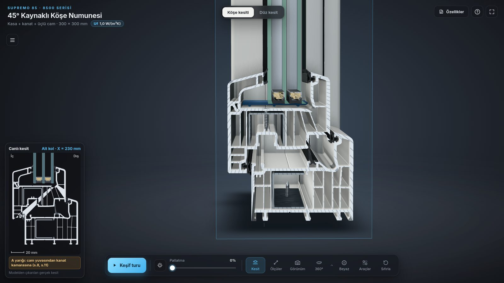
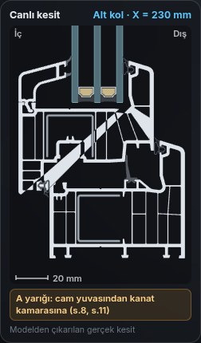
İki dokunuş arasındaki mesafe 0,1 mm hassasiyetle gösterilir; en fazla üç ölçü tutulur (tek LineSegments, etiketler DOM). Yapışma kuralları:
makeCutter ile o parçanın kesit hattıdır.Doğrulama: uç yüzde ve X = 150 kesit yüzünde kasa genişliği 85,0 mm ölçülür (s.9: 85 mm; kesit verisinde 0,0013–84,9928 mm).
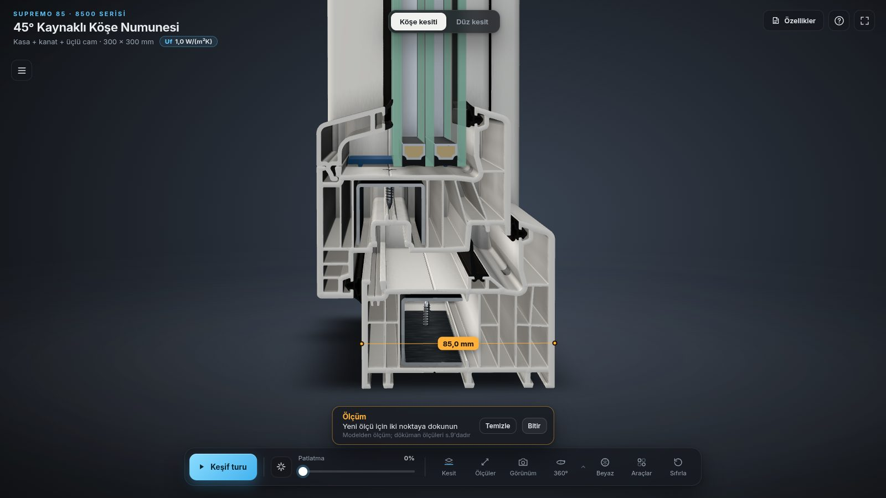
Genişlik × yükseklik (kasa dış ölçüsü D, 620–2000 × 620–2400 mm) ve açılım tipi girilir; numune tam pencerenin sol alt köşesi olur ve pencere köşeden büyüyerek açılır.
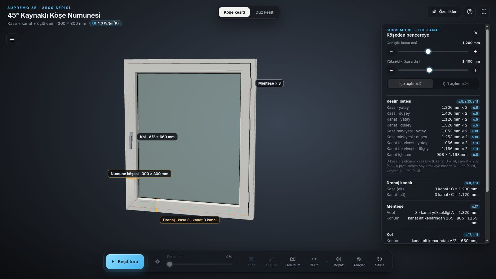
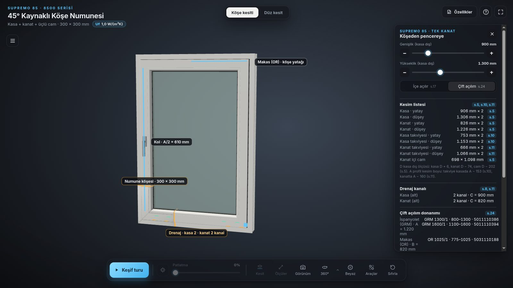
configurator-data.js)| Konu | Kural | Kaynak |
|---|---|---|
| Kesim listesi | Kasa D + 6, kanat D − 74, kanat içi cam D − 202 (kasadan kasaya sütunu) | s.5 |
| Takviye | A profil kesim boyu: kasada A − 153, kanatta A − 160 | s.10 s.11 |
| Kanat ölçüsü | W − 80 × H − 80 (kesitte kanat dış kenarı kasa kenarından 40 mm içeride; kesim D − 74, köşe başına 3 mm kaynak payı) | s.9 |
| Drenaj adedi | Kasa (C = W): < 500: 1 · 500–1000: 2 · 1000–2000: 3 · ≥ 2000: 4. Kanat (C = W − 80): < 500: 1 · 500–1000: 2 · ≥ 1000: 3. Her kanal iki yarıktır (iç ve dış, merkezler arası 102 mm). | s.8 s.11 |
| Yarık yerleri | Uçlarda iç köşe referansından 10 · 32 · 70 · 32 (numunedeki gibi: kasa 100 / 202, kanat 128 / 230 mm); ara kanallar eşit aralıklı (varsayım) | s.8 |
| Menteşe (içe açılır) | A = kanat yüksekliği: < 1100: 2 · 1100–1400: 3 · ≥ 1400: 4. Üstten ve alttan 165 mm, ikinci menteşe ilkinin 350 mm altında, kalanlar eşit aralıklı. Menteşeler sağda, kol solda (s.17 iç görünüş). | s.17 |
| Kol | Kanat alt kenarından A/2; mil kanat kenarından 33 mm | s.17 s.11 |
| Çift açılım | İspanyolet GRM (kanat yüksekliği) ve makas OR (kanat genişliği) aralıkları; aralığa giren tüm ürünler kodlarıyla listelenir, aralık dışında uyarı | s.24 |
Döküman sınır değerleri tanımlamaz (ör. "A < 1100" ve "1101 < A"); sınırda üst sınıf alınır.
window.js)(sy, sy), (W − sy, sy), (W − sy, H − sy), (sy, H − sy) olan dikdörtgene gider; komşu kenarlar köşe noktasını paylaştığı için gönye kendiliğinden oluşur (Blender'daki miter_L ile aynı fikir).aAxis özniteliği yatay/düşey profili bildirir; ahşap damarı ve kalıp izi doğru yöne döner.| Özellik | Uygulama |
|---|---|
| Üretim hikâyesi | 6 adım (ekstrüzyon 0 sn, 45° kesim 6, takviye ve vidalar 11, kaynak 240–280 °C 19, köşe temizleme 31, montaj 35), 46 sn. Kaynaklı kasa, üçgen ağırlık merkezine göre (x ≥ y) köşe özniteliklerini paylaşan iki geçici kol mesh'ine bölünür; ısıtıcı plaka, gönye ısınması (uHeat), kaynak taşıntısı (dış halkadan tüp). Adıma atlanabilir (durum her adımda baştan kurulur). |
| Röntgen merceği | Ekranda sürüklenen daire; içinde PVC çizilmez (SUP_LENS), çelik, vida, conta, takoz ve cam görünür; seçim mercek içindeki PVC'yi atlar. |
| Kamara sayacı | Kasa 14, kanat 11 kamara, serbest uçta sırayla renklenir ve numaralanır; ShapeUtils ile üçgenlenmiş tek mesh. |
| Su tahliyesi | s.9'daki 42 su okundan çıkarılan 3B yol; damlalar tek InstancedMesh, akış şeridi tek mesh. |
| Çizim bindirme | s.9 çizgileri uç kesitte 1:1; model ile döküman örtüşmesi ziyaretçiye gösterilir. |
| Renk perdesi | Ekranı dikey bölen sürüklenebilir perde; iki renk seti tek geçişte. |
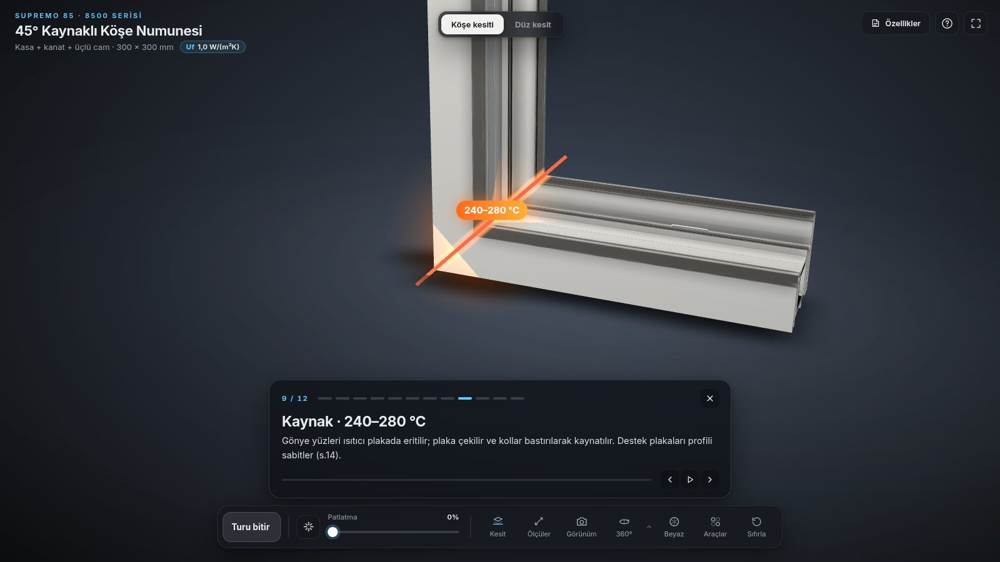
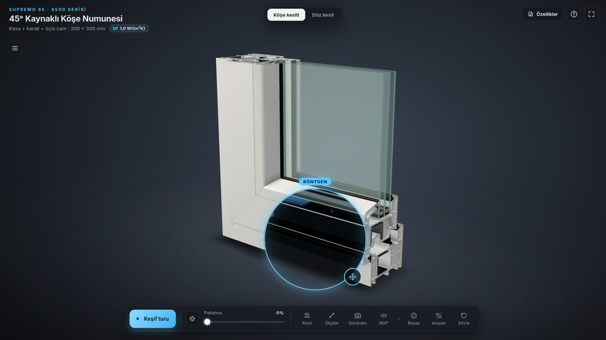
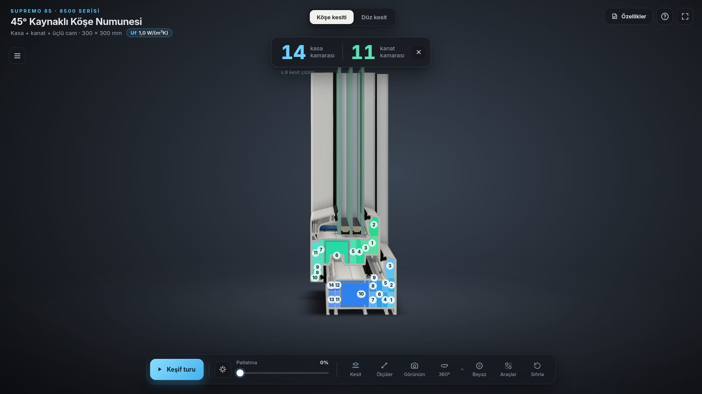
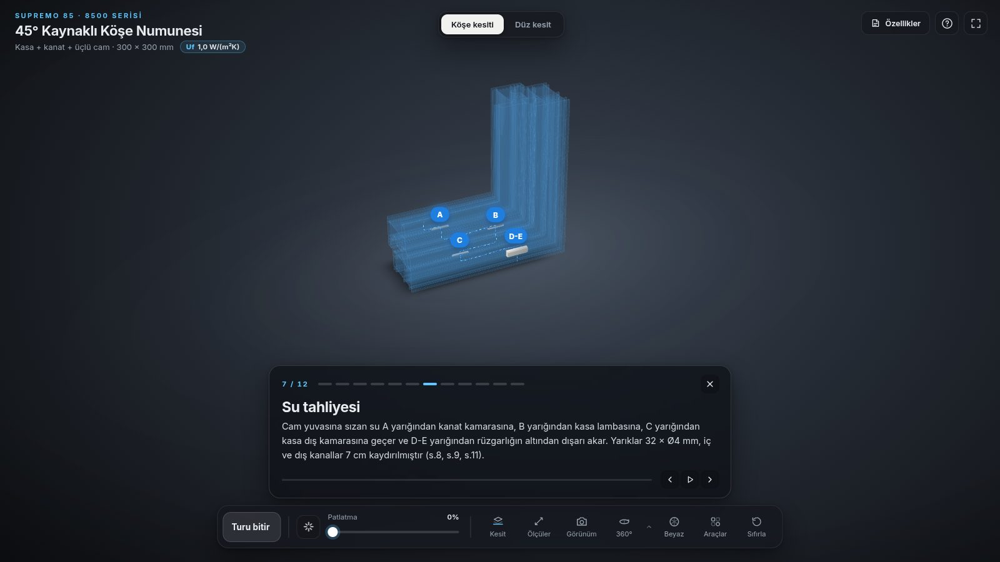
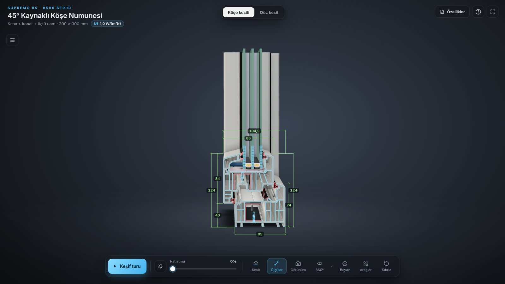
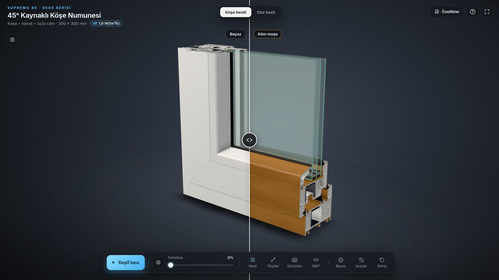
Değerler docs/budget.mjs ile ölçülür: 1600 × 900 görünüm, piksel oranı 1, her durumda çizilen karenin renderer.info sayıları.
| Durum | Üçgen | Çizim çağrısı |
|---|---|---|
| Duruş (açılış görünümü) | 84.880 | 27 |
| Kesit açık: X = 150 ya da gönye (canlı kesitle) | 84.882 | 29 |
| Isı haritası (kamara dolgusuyla) | 86.086 | 28 |
| Isı haritası + kesit X = 150 + ölçüm | 86.088 | 30 |
| Tam pencere, içe açılır 1200 × 1400 | 91.202 | 30 |
| Tam pencere, çift açılım 900 × 1300 | 90.950 | 29 |
| En yoğun: su animasyonu + çizim bindirme + ölçüler + işaretler | 94.800 | 31 |
Düz kesit sayfası (kesit.html), açılış | 74.738 | 23 |
Test, her bölüme gidip kamera ve patlatma animasyonu bittikten sonraki en yüksek değeri kaydeder:
| Bölüm | Üçgen | Çağrı | Bölüm | Üçgen | Çağrı |
|---|---|---|---|---|---|
| 1 Genel | 85K | 27 | 7 Su tahliyesi | 65K | 11 |
| 2 Kaynak yüzü | 85K | 29 | 8 Üçlü ısıcam | 16K | 10 |
| 3 Çok odacıklı kesit | 86K | 28 | 9 Üretim hikâyesi | 12K | 2 |
| 4 Isı akışı haritası | 86K | 28 | 10 Renk seçenekleri | 85K | 27 |
| 5 Röntgen: çelik | 85K | 27 | 11 Köşeden pencereye | 91K | 30 |
| 6 Üç conta hattı | 85K | 27 | 12 Final | 85K | 27 |
| Dosya | Boyut | Not |
|---|---|---|
js/kose.js | {{KB:site/js/kose.js}} | three.js alt kümesi dahil tek paket |
assets/kose/supremo85_kose.glb | {{KB:site/assets/kose/supremo85_kose.glb}} | meshopt, 26 parça |
assets/kose/ao_kose.ktx2 · studio2.ktx2 · ahsap.ktx2 · isi.ktx2 | {{KB:site/assets/kose/ao_kose.ktx2}} · {{KB:site/assets/kose/studio2.ktx2}} · {{KB:site/assets/kose/ahsap.ktx2}} · {{KB:site/assets/kose/isi.ktx2}} | 3.4'e bakınız |
vendor/basis/ | {{KB:site/vendor/basis/basis_transcoder.wasm}} + {{KB:site/vendor/basis/basis_transcoder.js}} | KTX2 dönüştürücü (wasm + js) |
assets/kose/assets-embedded.js | {{KB:site/assets/kose/assets-embedded.js}} | yalnız file:// açılışında yüklenir |
Boşta çizim yok: hiçbir şey değişmiyorsa kare çizilmez (4.2). 360° döner tabla açıkken sürekli çizilir; kalite kademesi bu durumda devreye girer. Performans panelindeki Performans testi 6 sn boyunca patlatma ve kesiti değiştirerek ortalama ve %1 düşük FPS ölçer.
Testler Xvfb altında gerçek bir Chromium ile, yazılımsal GL (llvmpipe, ANGLE-GL) üzerinde çalışır; aynı test http'de ve file:// ile ayrı ayrı koşturulur.
| Test | Kapsam | Sonuç |
|---|---|---|
interaction_test_kose.mjs | Yükleme, parça listesi, seçim, izolasyon, patlatma, dört eksende kesit, ölçüler ve çizim, 360°, renkler, iki renk ve perde, teknik özellikler ve ift kartı, klavye (Türkçe Q), işaretler, tur bölümleri (kaynak, su, hikâye, kamara, ısı, röntgen, pencere), ısı haritası, canlı kesit etiketleri, ölçüm (85,0 mm), pencere kipi (1200 × 1400 içe açılır; 800 × 1000 çift açılım), bütçe (her tur bölümü ve en yoğun durum), sayfa geçişi, çevrimdışılık, kiosk (açılışta dokunma, tanıtım, tanıtım ekranının görünürlüğü, uyanma, parametre taşıma), konsol hataları | 63 / 63 http ve file:// |
interaction_test.mjs | Düz kesit sayfası | 20 / 20 |
test_configurator.mjs | Tarayıcısız (Node): s.5, s.8, s.10, s.11, s.17, s.24 kuralları; sınır değerler (499/500, 999/1000, 1099/1100, 1399/1400, 920/921, 2300/2301, 1475/1476 mm); aralık dışı uyarılar; yarık yerlerinin kose_info.json ile tutarlılığı | 23 / 23 |
# yerel sunucu
cd output/site && python3 -m http.server 8091 --bind 127.0.0.1
# köşe (http ve file://), düz kesit
xvfb-run -a node interaction_test_kose.mjs http://127.0.0.1:8091/index.html ./shots_kose
xvfb-run -a node interaction_test_kose.mjs file:///.../output/site/index.html ./shots_kose_file
xvfb-run -a node interaction_test.mjs http://127.0.0.1:8091/kesit.html ./shots_duz
node test_configurator.mjs--use-gl=angle --use-angle=gl --ignore-gpu-blocklist --disable-gpu-watchdog. Yazılımsal GL'de tek bir kare saniyeler sürebildiği için GPU gözetçisi kapatılır; gerçek GPU'da gerekmez. SOFT_GL=swiftshader ile SwiftShader kullanılabilir.Python 3.11 ve pip install bpy pymupdf shapely scipy pillow; KTX-Software 4.3 (ktx); Node ve @gltf-transform/cli, esbuild, playwright-core; testler için Xvfb ve Chromium.
cd output/source
python3 scripts/final2d.py # section_mm.json (s.9 vektörleri)
python3 scripts/build_corner.py # supremo85_kose.blend + kose_info.json
BLEND=supremo85_kose.blend OUT=assembly_check_kose.json python3 scripts/check_assembly.py
CHECK=assembly_check_kose.json OUT=montaj_denetimi_kose.md python3 scripts/assembly_report.py
CORNER=1 BLEND=supremo85_kose.blend PREFIX=kose_ GLB_OUT=supremo85_kose_raw.glb python3 scripts/bake_ao.py
gltf-transform meshopt bake/supremo85_kose_raw.glb ../site/assets/kose/supremo85_kose.glb \
--quantization-volume scene --quantize-position 16 --quantize-normal 12 --quantize-texcoord 14
ktx create --encode basis-lz ... bake/kose_ao_packed.png ../site/assets/kose/ao_kose.ktx2
python3 scripts/render_studio_hdri.py env/studio2.ktx2 # stüdyo HDRI v2 (Cycles)
python3 scripts/make_wood_decor.py tex/ahsap.png # + ktx create → ahsap.ktx2
python3 scripts/extract_drawing_lines.py # drawing-data.js
python3 scripts/extract_water_path.py # water-path.js
python3 scripts/extract_rings.py # rings-data.js, chambers-data.js
KTX=<ktx yolu> python3 scripts/thermal_section.py # isi.ktx2, thermal-data.js (~1 dk)
viewer-kose/build-vendor.sh # yalnız three.js alt kümesi değişirse
viewer-kose/build.sh # js/kose.js + assets-embedded.jsAdımların ayrıntıları ve düz kesit için aynı zincir output/source/README.md'dedir.
Teslim edilen şey output/site/ klasörüdür. başlat.bat / başlat.command yerel sunucuyu açıp tarayıcıyı başlatır (Python, Node, PowerShell ya da Perl, hangisi varsa); kiosk-başlat.* tarayıcıyı tam ekran kiosk modunda ?kiosk=1 ile açar ve çeviri ile "geri yükle" uyarılarını kapatır. Sunucusuz açılış için index.html'e çift tıklamak yeterlidir.
| Parametre | Etki |
|---|---|
?kiosk=1 | Kiosk modu (4.7) |
&idle=60 | Tanıtıma geçiş süresi (sn, en az 15; varsayılan 90) |
&reload=6 | Tanıtımdayken 6 saatte bir yeniden yükleme |
&fs=0 | Tam ekran isteme |
&q=low|high | Kalite kademesini zorla |
&dpr=1 | Piksel oranı üst sınırı |
&aa=0 | Kenar yumuşatmayı kapat |
&intro=0, &spin=0 | Açılış sinematiği ve otomatik 360° yok (testler, ekran görüntüleri) |
&attract=1 | Kiosk yeniden yüklemesinden sonra doğrudan tanıtım (sayfanın kendisi ekler) |
constructor(app), app.onFrame((now, dt) => this.step(dt)); step() animasyon sürdükçe true döner; değişiklikten sonra app.requestRender().__viewer.lastInfo) ve teste bir bütçe kontrolü ekleyin; tur bölümü ekleniyorsa tour.cleanup()'a kapanışını yazın.ASSUMPTIONS'a ekleyin.touring, attract, attract-on, kiosk, measuring, window-mode) çıplak sınıf seçicisi olarak kullanılmamalı; öğe stilleri için kimlik ya da body.x .y biçimi kullanın (10.4).build.sh; http ve file:// testlerinin ikisini de çalıştırın.Teknik özellikler kartında da listelenen varsayımlar (parts-data.js → ASSUMPTIONS):
| Konu | Fark | Projedeki karar |
|---|---|---|
| Takviye vidası boyu | s.10 / s.11: 3,9 × 19; s.32 tablosu: 3,9 × 22 YSB ve 3,9 × 25 YHB | s.10/s.11 kullanılır; bilgi panelinde not |
| Kasa takviyesi başlangıcı | s.10 çiziminde uçtan 68 mm; A − 153'ün simetrik okunuşu 76,5 mm | 76,5 mm modellenir; iki değer de gösterilir |
| Eğik yarık açısı | s.8 metni 60°, kasa çizimi 50° | Kasada çizimdeki 50°, kanatta 60° |
| OR 800/0 kodu | s.24'te 501110154 (diğer kodlardan bir basamak eksik görünür) | Dökümandaki haliyle gösterilir |
| Sınır değerler | Tablolar sınırları tanımlamaz ("A < 1100", "1101 < A") | Sınırda üst sınıf |
| Hata | Neden ve düzeltme |
|---|---|
| Kiosk tanıtımında boş ekran | Tur, tanıtımda body'ye attract sınıfını ekler; çağrı öğesi için yazılmış .attract { position: fixed; left: 50%; … transform } kuralı body'ye de uydu. Body sabit konumlu, sıfır boyutlu bir kutuya döndü ve tüm sabit öğeleri (sahne dahil) kendine bağladı; tanıtım döngüsü boş göründü. Seçici #attract yapıldı; test artık tanıtım ekranının görünürlüğünü denetliyor. |
| Açılışta dokunulunca kiosk kilidi | Açılış durumu yalnız kamera animasyonunun bitişinde kapanıyordu; animasyon kesilince hiç kapanmıyordu. Kesilme, değişme ve süre dolması durumlarında kapanır. |
| Bütçe aşımı (~156K / 48) | Saydam, çift yüzlü hayalet malzemesi iki geçişte çiziliyordu; forceSinglePass. |
| Lekeli ahşap deseni | Nicemlenmiş nesne uzayı; uODeq açılımı (5.3). |
| Tırtıklı eş sıcaklık çizgileri | 8 bit dokuda düzlükler; R16F ve yarım basamak (6.1). |
| Commit | Tarih | Konu |
|---|
| Betik | Görev | Satır |
|---|---|---|
extract.py · extract2.py · extract3.py · build2d.py · final2d.py | s.9 vektörlerinden section_mm.json | {{LINES:source/scripts/extract.py,source/scripts/extract2.py,source/scripts/extract3.py,source/scripts/build2d.py,source/scripts/final2d.py}} |
build_model.py | Düz numune (Blender) | {{LINES:source/scripts/build_model.py}} |
build_corner.py | Köşe numunesi (Blender) | {{LINES:source/scripts/build_corner.py}} |
check_assembly.py · assembly_report.py | Montaj denetimi ve raporu | {{LINES:source/scripts/check_assembly.py,source/scripts/assembly_report.py}} |
bake_ao.py | UV atlası, Cycles AO, GLB | {{LINES:source/scripts/bake_ao.py}} |
render_studio_hdri.py · make_studio_hdri.py | Stüdyo HDRI v2 (Cycles) ve v1 (prosedürel) | {{LINES:source/scripts/render_studio_hdri.py,source/scripts/make_studio_hdri.py}} |
make_wood_decor.py · make_spangle.py | Ahşap ve galvaniz desenleri | {{LINES:source/scripts/make_wood_decor.py,source/scripts/make_spangle.py}} |
extract_drawing_lines.py · extract_water_path.py · extract_rings.py | Görüntüleyiciye gömülen veriler | {{LINES:source/scripts/extract_drawing_lines.py,source/scripts/extract_water_path.py,source/scripts/extract_rings.py}} |
thermal_section.py | Isı hesabı ve doku | {{LINES:source/scripts/thermal_section.py}} |
preview_corner.py · preview_render.py · overlay_3d.py | Cycles önizlemeleri, 3B bindirme | {{LINES:source/scripts/preview_corner.py,source/scripts/preview_render.py,source/scripts/overlay_3d.py}} |
interaction_test_kose.mjs · interaction_test.mjs · test_configurator.mjs | Testler | {{LINES:source/scripts/interaction_test_kose.mjs,source/scripts/interaction_test.mjs,source/scripts/test_configurator.mjs}} |
kiosk_soak.mjs · bench.mjs | Kiosk dayanıklılık, performans ölçümü | {{LINES:source/scripts/kiosk_soak.mjs,source/scripts/bench.mjs}} |
| Türkçe | İngilizce | Türkçe | İngilizce |
|---|---|---|---|
| Kasa | Frame | Kanat | Sash / casement |
| Cam çıtası | Glazing bead | Takviye (destek sacı) | Steel reinforcement |
| Gönye | Miter (45° corner) | Kamara | Chamber |
| Lamba | Rebate | Rüzgarlık | Drainage cover |
| Isıcam | Insulating glass unit | Ara çıta | Spacer |
| Nem alıcı | Desiccant | Takoz | Glazing block |
| İspanyolet | Espagnolette | Makas | Stay / scissor arm |
| Menteşe | Hinge | Kayıt | Mullion / transom |
| İçe açılır | Side-hung, inward opening | Çift açılım | Tilt and turn |
three.js ve three-mesh-bvh: MIT (vendor/LICENSE-*). Inter yazı tipi: SIL Open Font License (fonts/). Basis Universal dönüştürücü: Apache-2.0.